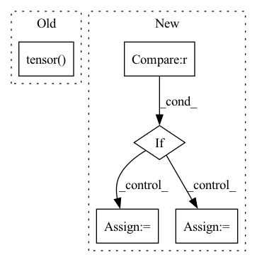

Pattern ID :1513
Before Change
hPad = max(0, 32 - h)
wPad = max(0, 32 - w)
x = F.pad(x, (0, wPad, 0, hPad))
return self._quantizer(self._encoder(x)), torch.tensor( [h, w], dtype=torch.int)
class RefDecoder(nn.Module):
def __init__(self, m, k, channel):After Change
for i in range(self._levels):
head = self._heads[i]
z = head(latent)
if i < self._levels - 1 :
mapper = self._mappers[i]
latent = mapper(latent)
code = self._quantizers[i](z)
hard = self._deQuantizers[i](code)
latent = latent - hard
else:
code = self._quantizers[i](z)
codes.append(code)In pattern: SUPERPATTERN
Frequency: 3
Non-data size: 5
Instances Fragment ID: 5085389
Project Name: xiaosu-zhu/mcquic
Commit Name: 3ca26f40dc8d00ed5fbebee4a77654f9d1d51939
Time: 2021-10-08
Author: xiaosu.zhu@outlook.com
File Name: src/mcqc/evaluation/refModel.py
M Class Name: RefEncoder
N Class Name: RefEncoder
M Method Name: forward(2)
N Method Name: forward(2)
M Parent Class: nn.Module
N Parent Class: nn.Module
M File Name: src/mcqc/evaluation/refModel.py
N File Name: src/mcqc/evaluation/refModel.py
M Start Line: 106
M End Line: 114
N Start Line: 136
N End Line: 150
Before Change
// loss_semantic += self.semantic_loss(grad_reverse(negative_output, self.grl_lambda), embedding)
// loss_semantic = loss_semantic.mean()
loss_semantic = torch.tensor( 0.0) .to(self.device)
loss_triplet = self.triplet_loss(anchor_output, positive_output, negative_output)
After Change
targets_sketch = torch.zeros(batch_size).to(self.device)
targets_photos = torch.ones(batch_size).to(self.device)
if epoch < 5 :
lmbda = 0
elif epoch < 25:
lmbda = (epoch-5)/20.0
else:
lmbda = 1.0
Fragment ID: 5085388
Project Name: ashok-arjun/zero-shot-sketch-based-image-retrieval
Commit Name: 085a42cbf259a0114fd96e1b8acfa2c75bb79c31
Time: 2020-08-16
Author: arjun2000ashok@gmail.com
File Name: model/loss.py
M Class Name: DetangledJointDomainLoss
N Class Name: DetangledJointDomainLoss
M Method Name: forward(6)
N Method Name: forward(6)
M Parent Class: nn.Module
N Parent Class: nn.Module
M File Name: model/loss.py
N File Name: model/loss.py
M Start Line: 112
M End Line: 132
N Start Line: 114
N End Line: 138
Before Change
pearson = [neg_Pearson_Loss(prediction,targets) for prediction in predictions ]
// snr_loss = [si_snr(prediction,targets) for prediction in predictions ]
return torch.mean(torch.tensor( pearson) )//torch.sum(torch.Tensor(pearson)) //+ torch.sum(torch.Tensor(snr_loss))//torch.mean(torch.tensor(pearson))
After Change
// p_loss = mutual_information_loss(predictions[i], targets)
if epoch >= 400 :
loss += phase_correlation_loss(predictions[i],targets)
loss += power_spectrum_loss(predictions[i], targets)
shrink_factor = 4
Fragment ID: 5085401
Project Name: tvs-ai/pytorch_rppgs
Commit Name: 6e1f4d2b69e34974564cdb09205c0c29ae43db07
Time: 2023-02-23
Author: spicyyeol@gmail.com
File Name: loss.py
M Class Name: BVPVelocityLoss
N Class Name: BVPVelocityLoss
M Method Name: forward(5)
N Method Name: forward(3)
M Parent Class: nn.Module
N Parent Class: nn.Module
M File Name: loss.py
N File Name: loss.py
M Start Line: 288
M End Line: 291
N Start Line: 387
N End Line: 423